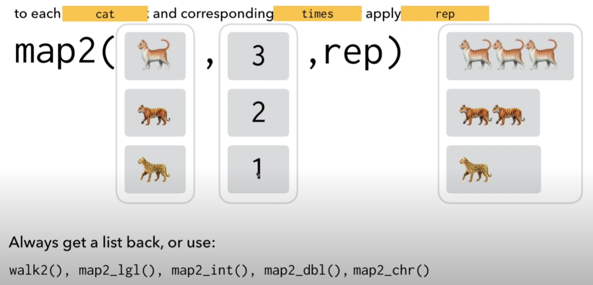

Chapter 10 Intermediate R: Functions, Loops, and Iterative Programming
10.1 Functions
A function is a command that performs a specified operation and returns an output in accordance with that operation. You can literally make a function to do anything you want.
General structure of a basic function:
# example structure
Function_name=function(argument){
Expressions
return(output)
}- Argument is your input. It is the thing you want to perform the operation on.
- Expressions is the actual operation (or operations) you want to perform on the supplied argument
- return tells R to return the result of the Expression to you when done.
This example function takes an input of numbers in the form of a vector and subtracts two from each.
numbers=c(2,10,12,80)
sub_2=function(x){
result= x - 2
return(result)
}
sub_2(numbers)## [1] 0 8 10 78We can also supply the function with a single number and it still works…
sub_2(100)## [1] 98Well this looks useful. So what’s the bigger picture?
One of the primary advantages of functions are that they can reduce a long and complex process, or a process that involves many steps, into a single line of code; thus, creating your own functions is a fast way to make your life easier down the line either at some point in the far future or even in just a few minutes, if you know you will be writing the code for some process two or more times.
Take this script for instance. You can see from the circled parts that I needed to transform three different data sets in a similar way:
knitr::include_graphics(here::here("pics", "repeat_process.jpg"))
Yes, I could have just done a copy-paste of the original code and tweak it slightly each time…. But that is time consuming, produces a sloppier and longer script, and introduces a lot more room for error because of the repeated code and extra steps.
Better to write a single function that could be applied to all three….
In short, use functions to reduce a multi-step process or a process that you’re implementing >=2 times in a single script into one command. This saves you space and makes the script shorter; it saves you the trouble and effort of re-writing or adapting code from earlier sections; and importantly, reduces the chances of you making a coding error by proxy of the former two.
As a quick example, I was able to replace each of the circled paragraphs of code above with a custom function that ran everything in one simple line. Now instead of 3 whole (and redundant) paragraphs, I now have 3 short lines, like so….
na_zero_helpreint=rotate_data(data = na_zero_helpreint,
variable_prefix = "reintegrate_")
na_blank=rotate_data(data = na_zero_helpreint, variable_prefix = "barrier_")
na_zero=rotate_data(data = na_zero_helpreint, variable_prefix = "barrier_")Limitations to your average, everyday functions. While reducing a whole process or sequence of commands is extremely useful, it still leaves a limitation. For instance, while we avoided copying and pasting whole paragraphs or processes, I still had to copy-paste the same function three times. This still leaves chances for error on the table, and it still leaves us with wasted lines that make the script longer.
In general, when you want to perform some function or process multiple times on multiple items (as above where the same command is used three times on three different data frames), you need to use a for-loop or iterating function. These can reduce further unwanted redundancies by applying the function or process iteratively. Read on for more info.
10.2 For-loops
A for loop is essentially a function that applies a function or given set of operations to multiple things at once, and returns an output of many items.
For example, this code finds the means of every vector/column in a dataset by repeatedly applying the same code over and over to element “i” in the given list:
df <- tibble(
a = rnorm(10),
b = rnorm(10),
c = rnorm(10),
d = rnorm(10)
)
output <- vector("double", ncol(df)) # 1.Output. Create the object you want the results of the loop stored in.
for (i in seq_along(df)) { # 2.Sequence of operations. "For each item 'i' along data frame…"
output[[i]] <- median(df[[i]]) # 3.Body:"every individual item in 'output' = the median of each col in df
}
output## [1] 0.3771802 -0.5176346 0.4171879 0.5704655Check out this book chapter for a great and detailed explanation of for-loops and functional coding.
Although for loops are nice, they are unwieldy. R programmers typically
use iterating functions instead. Examples of iterating functions are the
lapply, vapply, sapply, etc. family of base R commands. But these can
also be confusing and the commands are not great.
The purrr package offers a better way to do iterating functions over base R; it’s the tidyverse way to make efficient and understandable for loops! If you have a need for a for-loop for something, see the next section instead on how to use purrr to make an iterative function. Important to understand conceptually what a for-loop is, but using them is impractical when you have purrr
10.3 purrr and Iterative Functions
All notes here come from Charlotte Wickham’s lecture tutorial below
- Part 1: https://www.youtube.com/watch?v=7UlWJWfZO9M
- Part 2: https://www.youtube.com/watch?v=b0ozKTUho0A&t=1210s
purrr’s map() series of functions offer a way to apply any existing
function (even functions you’ve made) to multiple things at once, be it
lists, data frame columns, individual items in vector, etc. In short,
they are for doing the same type of task repeatedly in a very quick and
efficient manner. They work in much the same way as for-loops, but are
far simpler to write, and can be applied in the same way to solve the
same problems.
How to use purrr
The structure of map() commands is the same as the others in the
tidyverse:
#option 1
map(data, function)
# option 2
data %>% map(function)As a quick example and to highlight why purrr is so much more efficient
and easier to use than for-loops, look at the same example from before,
now using map() instead of a for:
df |> map_dbl(median)## a b c d
## 0.3771802 -0.5176346 0.4171879 0.5704655A single line is all it took to get the same results! And, it follows tidyverse grammar structure.
Now lets get into how it works….
map() commands work like this: For each element of x, do f.
So if you pass it object x and object x is….
- A vector, it will perform function f on every item in the vector
- A data frame, it will perform function f on every column in the data frame
- A list, it will perform function f on every level in the list
Etc., etc.; the point is it applies a function repeatedly to every element in the object you supply it with.
So lets walk through a case example.
10.3.1 Reproducible example: Scraping web data
This is an example walk through showing how we can use purrr to speed
things up dramatically and/or reduce the use of unwanted, extra code in
our scripts. In this guide I’ll be building a table of LPGA Tour
statistics from multiple webpages.
The workflow for purrr goes like this:
First, you want to figure out how to do each step of your process line-by-line, for a single item. The idea is to try and walk through each step of the process and see exactly what will need to be done each each step and what the code will like, before trying to code it all at once at a higher level.
Once you have each step for the first item figured out, then you make functions for each step that condense that code down to one command.
Lastly, apply each function from your individual steps to all items in
your list by using purr::map().
Do for One
library(rvest)
# STEP 1
# Figure out a line-by-line process for one item/one single web page
html1=read_html("https://scores.nbcsports.com/golf/averages.asp?tour=LPGA&rank=04") |>
html_nodes("table.shsTable.shsBorderTable") |>
html_table(fill = TRUE, header=TRUE) |>
as.data.frame() |>
janitor::clean_names()
head(html1)## rank name distance
## 1 1 Bianca Pagdanganan 284.000
## 2 2 Emily Pedersen 276.750
## 3 3 Lexi Thompson 276.286
## 4 4 Charley Hull 275.714
## 5 5 Alana Uriell 274.000
## 6 6 Frida Kinhult 273.750# STEP 2
# create a custom function of the above to shorten and generalize the process
quick_read_html=function(url){
web_page=read_html(url) |>
html_nodes("table.shsTable.shsBorderTable") |> # fortunately this node works for all four pages so it can be baked into the function
html_table(fill = TRUE, header = TRUE) |>
as.data.frame() |>
janitor::clean_names()
return(web_page)
}
# test to verify it works
test=quick_read_html(url= "https://scores.nbcsports.com/golf/averages.asp?tour=LPGA&rank=08")
head(test) # nice ## rank name putt_average
## 1 1 Leona Maguire 1.655
## 2 2 Danielle Kang 1.661
## 3 3 Brooke Henderson 1.701
## 4 4 Su-Hyun Oh 1.707
## 5 5 Carlota Ciganda 1.711
## 6 6 Madelene Sagstrom 1.711DO FOR ALL. Now create the object that contains all the elements you want to iterate over, and then pass it to your generalized function with map.
# Step 3a
# create an object that contains ALL elements of interest
URLs=c("https://scores.nbcsports.com/golf/averages.asp?tour=LPGA&rank=04",
"https://scores.nbcsports.com/golf/averages.asp?tour=LPGA&rank=08",
"https://scores.nbcsports.com/golf/averages.asp?tour=LPGA&rank=06",
"https://scores.nbcsports.com/golf/averages.asp?tour=LPGA&rank=12")
# Step 4
# use the power of map and be amazed
lpga_data= URLs |> map(quick_read_html)
head(lpga_data)## [[1]]
## rank name distance
## 1 1 Bianca Pagdanganan 284.000
## 2 2 Emily Pedersen 276.750
## 3 3 Lexi Thompson 276.286
## 4 4 Charley Hull 275.714
## 5 5 Alana Uriell 274.000
## 6 6 Frida Kinhult 273.750
## 7 7 Pauline Roussin-Bouchard 273.071
## 8 8 Janie Jackson 270.600
## 9 9 Jennifer Kupcho 270.333
## 10 10 Nanna Koerstz Madsen 270.300
## 11 11 Maria Fassi 270.125
## 12 12 Yuka Saso 270.050
## 13 13 Patty Tavatanakit 269.773
## 14 14 Brooke Henderson 268.727
## 15 15 Nelly Korda 268.636
## 16 16 Luna Sobron 268.500
## 17 17 Carlota Ciganda 268.143
## 18 18 Amanda Doherty 267.750
## 19 19 Atthaya Thitikul 267.429
## 20 20t Cydney Clanton 266.714
## 21 20t Rachel Rohanna 266.714
## 22 22 Sarah Kemp 265.750
## 23 23 Peiyun Chien 265.375
## 24 24t Fatima Fernandez Cano 265.200
## 25 24t Yealimi Noh 265.200
## 26 26 Amy Yang 265.071
## 27 27 Madelene Sagstrom 265.045
## 28 28t Agathe Laisne 264.500
## 29 28t Giulia Molinaro 264.500
## 30 30 Xiyu Lin 264.286
## 31 31 Jaye Marie Green 263.917
## 32 32 A Lim Kim 263.909
## 33 33 Alison Lee 263.900
## 34 34 Gerina Mendoza 263.417
## 35 35 Laura Davies 263.400
## 36 36 Maude-Aimee Leblanc 262.833
## 37 37 Allisen Corpuz 262.333
## 38 38 Stephanie Meadow 262.250
## 39 39 Sophia Schubert 261.917
## 40 40 Hyejin Choi 261.429
## 41 41 Gemma Dryburgh 261.167
## 42 42 Jennifer Song 261.125
## 43 43 Lauren Coughlin 260.625
## 44 44 Lilia Vu 260.571
## 45 45 Brittany Lincicome 260.071
## 46 46 Jessica Korda 259.875
## 47 47 Isi Gabsa 259.833
## 48 48 Katherine Perry-Hamski 259.800
## 49 49 Katherine Kirk 259.625
## 50 50 Ryann O'Toole 259.591
## 51 51 Annie Park 259.500
## 52 52 Ally Ewing 259.300
## 53 53 Ariya Jutanugarn 258.889
## 54 54 Yu Liu 258.375
## 55 55 Jeong Eun Lee 258.357
## 56 56 Georgia Hall 258.273
## 57 57 Lydia Ko 258.063
## 58 58 Leona Maguire 257.500
## 59 59 Ruixin Liu 257.200
## 60 60 Angela Stanford 257.000
## 61 61 Ana Belac 256.875
## 62 62 Nasa Hataoka 256.727
## 63 63 Esther Henseleit 256.500
## 64 64 Perrine Delacour 256.429
## 65 65 Sophia Popov 256.375
## 66 66 Lauren Kim 256.000
## 67 67 Linnea Johansson 255.929
## 68 68t Casey Danielson 255.375
## 69 68t Cristie Kerr 255.375
## 70 70 Gaby Lopez 255.300
## 71 71 Jeongeun Lee 255.250
## 72 72 Lauren Stephenson 254.786
## 73 73 Jodi Ewart Shadoff 254.714
## 74 74 Mel Reid 254.250
## 75 75 Jennifer Chang 254.000
## 76 76 Pernilla Lindberg 253.800
## 77 77 Paula Reto 253.700
## 78 78 Cheyenne Knight 253.600
## 79 79 Elizabeth Szokol 253.250
## 80 80 Sarah Schmelzel 253.143
## 81 81 Angel Yin 253.000
## 82 82 Jenny Shin 252.929
## 83 83 Amy Olson 252.786
## 84 84 Jasmine Suwannapura 252.571
## 85 85 Pajaree Anannarukarn 252.409
## 86 86 Danielle Kang 252.313
## 87 87 Na Rin An 252.071
## 88 88 Austin Ernst 252.056
## 89 89 Wichanee Meechai 252.000
## 90 90 Brittany Altomare 251.900
## 91 91 Jenny Coleman 251.875
## 92 92 Albane Valenzuela 251.500
## 93 93 Muni He 251.250
## 94 94 Megan Khang 250.929
## 95 95 Dewi Weber 250.500
## 96 96 Hee Young Park 250.400
## 97 97 Celine Boutier 250.364
## 98 98 Pornanong Phatlum 250.214
## 99 99 Andrea Lee 249.750
## 100 100 In Gee Chun 249.286
## 101 101 Caroline Masson 249.200
## 102 102 Su-Hyun Oh 249.071
## 103 103 Kelly Tan 248.929
## 104 104 Mina Harigae 248.875
## 105 105 Morgane Metraux 248.500
## 106 106 Brittany Lang 248.417
## 107 107 Anna Nordqvist 248.227
## 108 108 Bronte Law 247.643
## 109 109 Ayaka Furue 246.714
## 110 110 Marina Alex 246.571
## 111 111 Yae Eun Hong 246.500
## 112 112 Lindsey Weaver 246.357
## 113 113 Moriya Jutanugarn 245.389
## 114 114 Ashleigh Buhai 245.125
## 115 115 Matilda Castren 244.833
## 116 116 Marissa Steen 244.200
## 117 117 Heaji Kang 243.875
## 118 118 Na Yeon Choi 242.750
## 119 119 Emma Talley 242.000
## 120 120 Karrie Webb 241.625
## 121 121 Christina Kim 240.083
## 122 122 Stacy Lewis 238.682
## 123 123 Mirim Lee 238.563
## 124 124 Allison Emrey 237.083
## 125 125 Aditi Ashok 236.429
## 126 126 Michelle Wie West 235.875
## 127 127 Inbee Park 235.056
## 128 128 Dana Finkelstein 234.786
## 129 129 Beatriz Recari 228.250
##
## [[2]]
## rank name putt_average
## 1 1 Leona Maguire 1.655
## 2 2 Danielle Kang 1.661
## 3 3 Brooke Henderson 1.701
## 4 4 Su-Hyun Oh 1.707
## 5 5 Carlota Ciganda 1.711
## 6 6 Madelene Sagstrom 1.711
## 7 7 Georgia Hall 1.715
## 8 8 Lauren Stephenson 1.718
## 9 9 Gemma Dryburgh 1.719
## 10 10 Inbee Park 1.719
## 11 11 Patty Tavatanakit 1.719
## 12 12 Nanna Koerstz Madsen 1.721
## 13 13 Jeong Eun Lee 1.723
## 14 14 Lexi Thompson 1.724
## 15 15t Yae Eun Hong 1.726
## 16 15t Pauline Roussin-Bouchard 1.726
## 17 17 Celine Boutier 1.729
## 18 18 Caroline Masson 1.731
## 19 19 Pernilla Lindberg 1.737
## 20 20 Sarah Schmelzel 1.739
## 21 21 Jessica Korda 1.745
## 22 22 Amanda Doherty 1.746
## 23 23 Morgane Metraux 1.746
## 24 24 Nelly Korda 1.750
## 25 25 Stacy Lewis 1.752
## 26 26 Linnea Johansson 1.753
## 27 27 Cheyenne Knight 1.754
## 28 28 Perrine Delacour 1.756
## 29 29 Isi Gabsa 1.756
## 30 30 Yealimi Noh 1.758
## 31 31 Lilia Vu 1.761
## 32 32 Charley Hull 1.765
## 33 33 Yuka Saso 1.767
## 34 34 Bronte Law 1.767
## 35 35t Ayaka Furue 1.769
## 36 35t Hee Young Park 1.769
## 37 37t Aditi Ashok 1.773
## 38 37t Lindsey Weaver 1.773
## 39 39 Lydia Ko 1.774
## 40 40 Angela Stanford 1.774
## 41 41 Rachel Rohanna 1.775
## 42 42 Xiyu Lin 1.776
## 43 43 Brittany Lincicome 1.776
## 44 44t Brittany Altomare 1.778
## 45 44t Heaji Kang 1.778
## 46 46 Janie Jackson 1.780
## 47 47 Laura Davies 1.781
## 48 48t Megan Khang 1.783
## 49 48t Amy Yang 1.783
## 50 50 Ryann O'Toole 1.786
## 51 51 Marina Alex 1.789
## 52 52t Allisen Corpuz 1.791
## 53 52t Ally Ewing 1.791
## 54 52t Gaby Lopez 1.791
## 55 55t Hyejin Choi 1.792
## 56 55t Andrea Lee 1.792
## 57 57 Nasa Hataoka 1.792
## 58 58 Maude-Aimee Leblanc 1.795
## 59 59 Muni He 1.797
## 60 60 Na Rin An 1.798
## 61 61 Amy Olson 1.802
## 62 62 Pajaree Anannarukarn 1.806
## 63 63 A Lim Kim 1.807
## 64 64 Sarah Kemp 1.808
## 65 65 Fatima Fernandez Cano 1.810
## 66 66 Christina Kim 1.813
## 67 67 Sophia Schubert 1.816
## 68 68t Cydney Clanton 1.816
## 69 68t Jenny Shin 1.816
## 70 70 Dana Finkelstein 1.817
## 71 71t Agathe Laisne 1.818
## 72 71t Gerina Mendoza 1.818
## 73 71t Dewi Weber 1.818
## 74 74 Atthaya Thitikul 1.819
## 75 75 Jennifer Chang 1.821
## 76 76 In Gee Chun 1.822
## 77 77 Jennifer Kupcho 1.825
## 78 78 Moriya Jutanugarn 1.826
## 79 79t Maria Fassi 1.830
## 80 79t Yu Liu 1.830
## 81 81 Ruixin Liu 1.831
## 82 82 Na Yeon Choi 1.833
## 83 83 Katherine Perry-Hamski 1.844
## 84 84 Stephanie Meadow 1.847
## 85 85 Kelly Tan 1.849
## 86 86 Sophia Popov 1.851
## 87 87t Frida Kinhult 1.852
## 88 87t Alison Lee 1.852
## 89 89 Jodi Ewart Shadoff 1.853
## 90 90 Annie Park 1.855
## 91 91 Lauren Kim 1.857
## 92 92 Lauren Coughlin 1.860
## 93 93 Jasmine Suwannapura 1.860
## 94 94 Emma Talley 1.860
## 95 95 Ariya Jutanugarn 1.863
## 96 96 Pornanong Phatlum 1.864
## 97 97 Matilda Castren 1.864
## 98 98t Giulia Molinaro 1.867
## 99 98t Karrie Webb 1.867
## 100 100t Elizabeth Szokol 1.870
## 101 100t Alana Uriell 1.870
## 102 102 Mirim Lee 1.871
## 103 103 Esther Henseleit 1.872
## 104 104 Luna Sobron 1.875
## 105 105 Marissa Steen 1.881
## 106 106 Peiyun Chien 1.882
## 107 107 Angel Yin 1.886
## 108 108 Cristie Kerr 1.886
## 109 109 Michelle Wie West 1.889
## 110 110 Anna Nordqvist 1.891
## 111 111 Mel Reid 1.891
## 112 112 Albane Valenzuela 1.892
## 113 113 Paula Reto 1.896
## 114 114 Ashleigh Buhai 1.900
## 115 115 Casey Danielson 1.902
## 116 116 Brittany Lang 1.903
## 117 117t Mina Harigae 1.905
## 118 117t Beatriz Recari 1.905
## 119 119 Austin Ernst 1.909
## 120 120 Jenny Coleman 1.913
## 121 121 Ana Belac 1.915
## 122 122 Bianca Pagdanganan 1.921
## 123 123 Katherine Kirk 1.930
## 124 124 Allison Emrey 1.932
## 125 125 Jeongeun Lee 1.935
## 126 126 Jaye Marie Green 1.940
## 127 127 Jennifer Song 1.959
## 128 128 Wichanee Meechai 1.966
## 129 129 Emily Pedersen 2.000
##
## [[3]]
## rank name greens_hit
## 1 1 Charley Hull 81.0
## 2 2 Brittany Altomare 80.0
## 3 3 Allisen Corpuz 79.6
## 4 4 Celine Boutier 78.3
## 5 5t Brooke Henderson 77.8
## 6 5t Xiyu Lin 77.8
## 7 5t Lexi Thompson 77.8
## 8 8 Maude-Aimee Leblanc 76.9
## 9 9 Hyejin Choi 76.2
## 10 10 Isi Gabsa 75.9
## 11 11 Danielle Kang 75.7
## 12 12 Nanna Koerstz Madsen 75.6
## 13 13 Jodi Ewart Shadoff 75.4
## 14 14t Matilda Castren 75.0
## 15 14t Frida Kinhult 75.0
## 16 16t Caroline Masson 74.4
## 17 16t Paula Reto 74.4
## 18 16t Marissa Steen 74.4
## 19 19 Jennifer Kupcho 74.1
## 20 20 Yuka Saso 73.9
## 21 21 Jasmine Suwannapura 73.8
## 22 22 Lydia Ko 73.6
## 23 23 Yealimi Noh 73.3
## 24 24t Megan Khang 73.0
## 25 24t Amy Yang 73.0
## 26 26 Pajaree Anannarukarn 72.7
## 27 27t Jennifer Chang 72.2
## 28 27t Ayaka Furue 72.2
## 29 27t Ariya Jutanugarn 72.2
## 30 27t Sarah Kemp 72.2
## 31 27t Ruixin Liu 72.2
## 32 27t Emily Pedersen 72.2
## 33 33t Ally Ewing 71.7
## 34 33t Gaby Lopez 71.7
## 35 35t Marina Alex 71.4
## 36 35t In Gee Chun 71.4
## 37 35t Perrine Delacour 71.4
## 38 38 Jeongeun Lee 71.3
## 39 39 Stacy Lewis 71.2
## 40 40 Katherine Perry-Hamski 71.1
## 41 41t Peiyun Chien 70.8
## 42 41t Casey Danielson 70.8
## 43 41t Jessica Korda 70.8
## 44 44 Na Rin An 70.6
## 45 45t Inbee Park 70.4
## 46 45t Sophia Schubert 70.4
## 47 47 Patty Tavatanakit 70.2
## 48 48 Sophia Popov 70.1
## 49 49t Fatima Fernandez Cano 70.0
## 50 49t Bianca Pagdanganan 70.0
## 51 51t Aditi Ashok 69.8
## 52 51t Pornanong Phatlum 69.8
## 53 51t Sarah Schmelzel 69.8
## 54 51t Lilia Vu 69.8
## 55 55t Ashleigh Buhai 69.4
## 56 55t Lauren Coughlin 69.4
## 57 57t Cydney Clanton 69.0
## 58 57t Wichanee Meechai 69.0
## 59 57t Jenny Shin 69.0
## 60 60 Annie Park 68.9
## 61 61 Nelly Korda 68.7
## 62 62 Albane Valenzuela 68.5
## 63 63t Bronte Law 68.3
## 64 63t Amy Olson 68.3
## 65 63t Kelly Tan 68.3
## 66 66 A Lim Kim 68.2
## 67 67 Jennifer Song 68.1
## 68 68 Austin Ernst 67.9
## 69 69t Brittany Lincicome 67.5
## 70 69t Lauren Stephenson 67.5
## 71 71 Moriya Jutanugarn 67.3
## 72 72t Yae Eun Hong 66.7
## 73 72t Andrea Lee 66.7
## 74 72t Leona Maguire 66.7
## 75 72t Stephanie Meadow 66.7
## 76 72t Giulia Molinaro 66.7
## 77 72t Pauline Roussin-Bouchard 66.7
## 78 72t Luna Sobron 66.7
## 79 79 Ryann O'Toole 66.2
## 80 80t Carlota Ciganda 65.9
## 81 80t Jeong Eun Lee 65.9
## 82 80t Atthaya Thitikul 65.9
## 83 83 Morgane Metraux 65.7
## 84 84t Georgia Hall 65.7
## 85 84t Nasa Hataoka 65.7
## 86 86 Janie Jackson 65.6
## 87 87t Ana Belac 65.3
## 88 87t Maria Fassi 65.3
## 89 87t Esther Henseleit 65.3
## 90 87t Yu Liu 65.3
## 91 91t Dana Finkelstein 65.1
## 92 91t Su-Hyun Oh 65.1
## 93 93t Anna Nordqvist 64.6
## 94 93t Madelene Sagstrom 64.6
## 95 95 Linnea Johansson 64.3
## 96 96t Jenny Coleman 63.9
## 97 96t Elizabeth Szokol 63.9
## 98 96t Alana Uriell 63.9
## 99 99 Rachel Rohanna 63.5
## 100 100t Cheyenne Knight 63.3
## 101 100t Pernilla Lindberg 63.3
## 102 102 Karrie Webb 62.5
## 103 103 Jaye Marie Green 62.0
## 104 104t Cristie Kerr 61.1
## 105 104t Agathe Laisne 61.1
## 106 104t Gerina Mendoza 61.1
## 107 104t Mel Reid 61.1
## 108 104t Dewi Weber 61.1
## 109 109 Alison Lee 60.0
## 110 110t Katherine Kirk 59.7
## 111 110t Emma Talley 59.7
## 112 112t Laura Davies 59.3
## 113 112t Gemma Dryburgh 59.3
## 114 112t Muni He 59.3
## 115 112t Christina Kim 59.3
## 116 116 Mirim Lee 59.0
## 117 117t Amanda Doherty 58.3
## 118 117t Mina Harigae 58.3
## 119 117t Lauren Kim 58.3
## 120 117t Beatriz Recari 58.3
## 121 121 Hee Young Park 57.8
## 122 122t Brittany Lang 57.4
## 123 122t Angela Stanford 57.4
## 124 124 Allison Emrey 54.6
## 125 125 Lindsey Weaver 52.4
## 126 126t Na Yeon Choi 50.0
## 127 126t Heaji Kang 50.0
## 128 126t Michelle Wie West 50.0
## 129 129 Angel Yin 48.6
##
## [[4]]
## rank name rounds score_average_actual
## 1 1 Danielle Kang 8 68.375
## 2 2t Charley Hull 7 68.857
## 3 2t Lexi Thompson 7 68.857
## 4 4 Brooke Henderson 11 69.182
## 5 5 Celine Boutier 11 69.273
## 6 6 Leona Maguire 7 69.286
## 7 7 Allisen Corpuz 3 69.667
## 8 8 Hyejin Choi 7 69.714
## 9 9 Lydia Ko 8 69.750
## 10 10 Brittany Altomare 5 69.800
## 11 11t Pauline Roussin-Bouchard 7 69.857
## 12 11t Sarah Schmelzel 7 69.857
## 13 13 Yuka Saso 10 69.900
## 14 14t Aditi Ashok 7 70.000
## 15 14t Jennifer Chang 3 70.000
## 16 14t Isi Gabsa 3 70.000
## 17 14t Nelly Korda 11 70.000
## 18 18t Marina Alex 7 70.143
## 19 18t Xiyu Lin 7 70.143
## 20 20 Patty Tavatanakit 11 70.364
## 21 21t Cheyenne Knight 5 70.400
## 22 21t Nanna Koerstz Madsen 5 70.400
## 23 23 Amy Yang 7 70.429
## 24 24 Stacy Lewis 11 70.455
## 25 25t In Gee Chun 7 70.571
## 26 25t Ayaka Furue 7 70.571
## 27 25t Megan Khang 7 70.571
## 28 28 Georgia Hall 11 70.636
## 29 29 Inbee Park 9 70.667
## 30 30t Perrine Delacour 7 70.714
## 31 30t Atthaya Thitikul 7 70.714
## 32 32 Jessica Korda 8 70.750
## 33 33 Caroline Masson 5 70.800
## 34 34t Yae Eun Hong 7 70.857
## 35 34t Bronte Law 7 70.857
## 36 36t Gemma Dryburgh 3 71.000
## 37 36t Jeong Eun Lee 7 71.000
## 38 38 Gaby Lopez 10 71.100
## 39 39t Na Rin An 7 71.143
## 40 39t Jodi Ewart Shadoff 7 71.143
## 41 39t Su-Hyun Oh 7 71.143
## 42 39t Jasmine Suwannapura 7 71.143
## 43 39t Kelly Tan 7 71.143
## 44 44 Maude-Aimee Leblanc 6 71.167
## 45 45t Pajaree Anannarukarn 11 71.273
## 46 45t Madelene Sagstrom 11 71.273
## 47 47 Pornanong Phatlum 7 71.286
## 48 48t Jenny Shin 7 71.429
## 49 48t Lilia Vu 7 71.429
## 50 50 Ryann O'Toole 11 71.455
## 51 51 Nasa Hataoka 11 71.545
## 52 52t Carlota Ciganda 7 71.571
## 53 52t Dana Finkelstein 7 71.571
## 54 54t Janie Jackson 5 71.600
## 55 54t Ruixin Liu 5 71.600
## 56 56 A Lim Kim 11 71.636
## 57 57 Matilda Castren 6 71.667
## 58 58t Brittany Lincicome 7 71.714
## 59 58t Lauren Stephenson 7 71.714
## 60 60t Yealimi Noh 5 71.800
## 61 60t Bianca Pagdanganan 5 71.800
## 62 60t Paula Reto 5 71.800
## 63 63 Sophia Schubert 6 71.833
## 64 64 Moriya Jutanugarn 9 71.889
## 65 65 Ally Ewing 10 71.900
## 66 66t Cydney Clanton 7 72.000
## 67 66t Fatima Fernandez Cano 5 72.000
## 68 66t Linnea Johansson 7 72.000
## 69 66t Alison Lee 5 72.000
## 70 66t Andrea Lee 2 72.000
## 71 66t Wichanee Meechai 7 72.000
## 72 66t Marissa Steen 5 72.000
## 73 73 Morgane Metraux 6 72.333
## 74 74 Katherine Perry-Hamski 5 72.400
## 75 75 Amy Olson 7 72.429
## 76 76t Sarah Kemp 2 72.500
## 77 76t Frida Kinhult 2 72.500
## 78 76t Jennifer Kupcho 6 72.500
## 79 76t Agathe Laisne 2 72.500
## 80 76t Alana Uriell 2 72.500
## 81 81 Ariya Jutanugarn 9 72.556
## 82 82t Rachel Rohanna 7 72.571
## 83 82t Lindsey Weaver 7 72.571
## 84 84 Albane Valenzuela 6 72.667
## 85 85 Ana Belac 4 72.750
## 86 86 Angela Stanford 9 72.778
## 87 87t Pernilla Lindberg 5 72.800
## 88 87t Giulia Molinaro 5 72.800
## 89 87t Annie Park 5 72.800
## 90 90t Jeongeun Lee 6 72.833
## 91 90t Stephanie Meadow 6 72.833
## 92 92 Anna Nordqvist 11 72.909
## 93 93t Sophia Popov 8 73.000
## 94 93t Elizabeth Szokol 2 73.000
## 95 93t Emma Talley 4 73.000
## 96 93t Karrie Webb 4 73.000
## 97 97 Dewi Weber 6 73.167
## 98 98 Casey Danielson 4 73.250
## 99 99 Laura Davies 3 73.333
## 100 100t Ashleigh Buhai 4 73.500
## 101 100t Muni He 6 73.500
## 102 100t Cristie Kerr 4 73.500
## 103 100t Christina Kim 6 73.500
## 104 100t Lauren Kim 2 73.500
## 105 100t Emily Pedersen 2 73.500
## 106 100t Mel Reid 10 73.500
## 107 100t Luna Sobron 2 73.500
## 108 108 Austin Ernst 9 73.556
## 109 109t Lauren Coughlin 4 73.750
## 110 109t Maria Fassi 4 73.750
## 111 109t Mina Harigae 4 73.750
## 112 112 Hee Young Park 10 73.800
## 113 113 Amanda Doherty 6 73.833
## 114 114t Peiyun Chien 4 74.000
## 115 114t Katherine Kirk 4 74.000
## 116 114t Yu Liu 4 74.000
## 117 117 Jennifer Song 4 74.250
## 118 118t Esther Henseleit 4 74.500
## 119 118t Brittany Lang 6 74.500
## 120 118t Gerina Mendoza 6 74.500
## 121 121 Jenny Coleman 4 74.750
## 122 122 Jaye Marie Green 6 74.833
## 123 123 Mirim Lee 8 75.375
## 124 124 Heaji Kang 4 75.500
## 125 125 Allison Emrey 6 76.000
## 126 126t Beatriz Recari 2 77.000
## 127 126t Michelle Wie West 4 77.000
## 128 128 Na Yeon Choi 4 78.500
## 129 129 Angel Yin 4 78.750All done!! And just like that, we’ve downloaded four different web pages, extracted the tabled info, and formatted them without copying and pasting any code. The same process for all four was only used one time to write the initial function. Just apply some final formatting to clean it up a bit and combine the separate data frames into a single, unified one.
lpga_data= lpga_data %>%
reduce(left_join, by="name") %>% # Combine all list levels into a single tibble, matching by the "Name" column
select(-contains("rank.")) |>
rename("score_average"="score_average_actual")
# VOILA!
head(lpga_data)## name distance putt_average greens_hit rounds score_average
## 1 Bianca Pagdanganan 284.000 1.921 70.0 5 71.800
## 2 Emily Pedersen 276.750 2.000 72.2 2 73.500
## 3 Lexi Thompson 276.286 1.724 77.8 7 68.857
## 4 Charley Hull 275.714 1.765 81.0 7 68.857
## 5 Alana Uriell 274.000 1.870 63.9 2 72.500
## 6 Frida Kinhult 273.750 1.852 75.0 2 72.50010.3.2 Non-reproducible example (Juvenile Life Without Parole study)
In the Juvenile Lifers study, there were a series of questions that participants rated on a scale of 0-100 in terms of difficulty. Part of our analysis involved taking the ratings on those variables and giving them relative rankings, so that each of the 6 variables in the series was rated from the least to most difficult, by participant.
Now if we only needed to compute these rankings once this wouldn’t have been any big deal; however, we needed to do it three times.
Much of the same code and the same process would need to be copied and pasted, resulting in a very long, messy, harder to read script. With purrr however, we can reduce the redundancies to a minimum, saving time and reducing the chances of mistakes.
Step 1. Just like before, the first step is to find a line-by-line solution for a single item, and then to generalize this into a shortcut function that can be applied to the any item “i” in a series of items.
For the sake of brevity, I’m going to skip most of that and just include the functions below.
load("C:/Github Repos/Studies/JLWOP/Data and Models/jlwop_reentry_survey.RData")
#### CREATE THE DATA SETS WE NEED####
na_blank=jlwop_reentry_survey # analysis 1 keeps the data as-is
na_zero=jlwop_reentry_survey %>% # supplementary analysis replaces the NA's with 0
mutate(across(c(barrier_housing:barrier_identification), replace_na,0))
rm(jlwop_reentry_survey) # remove old data set to avoid confusion
#### Functions ####
# transformation function to wrangle the data into proper formatting
rotate_data=function(data, variable_prefix){
data=data %>%
pivot_longer(
cols= starts_with(variable_prefix), # collect all the desired variables (i.e., columns)....
names_to = "variable", #...and put them into a new categorical variable called "variable"
values_to = "participant_score") %>% # ...and store their values in a new variable called "participant_score"
arrange(unique,participant_score) %>%
select(c(unique, participant_score, variable)) %>% # keep only these 3 variables
relocate(variable, .before = participant_score) # put the newly created variable up front
return(data)
}
# creating the rankings for each variable; then transform data back to original structure
rank_and_unpivot=function(data){
data=data %>%
group_by(unique) %>% # group the scores so they can be ranked by participant
mutate(rank1=dense_rank(participant_score), # create ranking variable
rank=max(rank1,na.rm = TRUE) + 1 - rank1) %>% # fix ranks by flipping to ascending order
mutate(rank=factor(rank)) %>% # convert rank to factor structure
select(-rank1)
# Pivot back to wide
data=data %>%
pivot_wider(names_from = variable, values_from = rank:participant_score) %>%
ungroup() # un-group the data and delete the generated names
return(data)
}Step 2.
Again, like before, we want to combine all elements of interest into some object. Once we have that, we then pass said object to map() and supply the map call with our custom function.
dfs=list(na_blank=na_blank, na_zero=na_zero) %>% # create lists
map(.f=rotate_data, variable_prefix = "barrier") %>% # apply custom function along whole list
map(rank_and_unpivot) # again!! DO IT AGAIN! With another function this time.
# extract list elements to make them data frames again
list2env(dfs, globalenv())
rm(dfs) #discard list. It has fulfilled its purpose.And just like that, we’re done!
10.3.3 Example 3: Read/Import several files at once with map()
Multiple ways you can do this
########## Read multiple files at once into a SINGLE, UNIFIED data frame #######################
files=paste0(here::here("Data", "Cognition data", "/"), list.files(path=here::here("Data", "Cognition data"), pattern = ".sav"))
cog_data=files |>
map_df(foreign::read.spss, to.data.frame=TRUE)
######### Read multiple files at once but KEEP AS SEPARATE data frames ####################################
files=paste0(here::here("Data", "Cognition data", "/"), list.files(path=here::here("Data", "Cognition data"), pattern = ".sav"))
cog_data=files |>
map(foreign::read.spss, to.data.frame=TRUE) # store all individual files as separate list elements
names(cog_data)=file.path(here::here("Data", "Cognition data")) |> #specify file path as a string
list.files(pattern = ".sav") |> # pass the path string to list files; search in this location for files with this extension
gsub(pattern=".sav", replacement = "") # remove this pattern to save only the name
# files can be extracted later with this if desired
list2env(cog_data, globalenv())Can also create a function to do this if you plan on doing it a bunch.
read_all=function(path, extension){
file_path <- path
# save only file names with the desired extension
file_names=file_path %>%
list.files() %>%
.[str_detect(., extension)]
if(str_detect(extension, pattern = ".csv")) (file_names %>%
purrr::map(function(file_name){ # iterate through each file name
assign(x = str_remove(file_name, ".csv"), # Remove file extension ".csv"
value = read_csv(paste0(file_path, file_name)),
envir = .GlobalEnv)}))
if(str_detect(extension, pattern = ".xlsx")) (file_names %>%
purrr::map(function(file_name){ # iterate through each file name
assign(x = str_remove(file_name, ".xlsx"), # Remove file extension ".csv"
value = readxl::read_excel(paste0(file_path, file_name)),
envir = .GlobalEnv)}))
}
read_all(path = "JLWOP/Data and Models/", extension = ".xlsx")10.4 Other purrr commands
Note that map() always returns a list, and depending on the output
that you want, you may need to use a variation of map(). These
variations are as follows:
| Command | Return |
|---|---|
map_lgl() |
logical vector |
map_int() |
integer vector |
map_dbl() |
double vector |
map_chr() |
character vector |
walk() |
only returns the side effects of a function |
10.4.1 The walk and walk2 commands
Walk() is useful for when you just want to plot something or write a save file to your disk, etc. It does not give you any return to store something in the environment. You use it to write/read files, open graphics windows, and so on.
Example: Exporting multiple .csv files at once
Utilize purrr::walk2() to apply a function iteratively on TWO objects
simultaneously. To save multiple .csv files with walk2, we need two
distinct lists: 1. A list of data frames that we wish to export, 2. and
the file paths, complete with the file names and extensions, for each
file to be written
First create and define both list items. Then apply walk2() to pluck
an element from list 1 and its corresponding element from list 2, and
apply the write_csv function in for-loop fashion.
### Custom function ####
bundle_paths=function(df_list, folder_location){
names=names(df_list)
paths=rep(here::here(folder_location), length(names))
extension=rep(c(".csv"), length(names))
fixed_names=paste0("/",names)
path_bundle=list(paths,fixed_names, extension) %>%
pmap(., paste0)
return(path_bundle)
}
#### Exporting the .csv files for SPSS/JASP/etc. ####
# Define list 1
dfs=list(na_blank=na_blank,
na_zero=na_zero,
na_zero_helpreint=na_zero_helpreint)
# list 2
paths_csv=bundle_paths(df_list = dfs, folder_location = "JLWOP/Data and Models")
# Iterate over all elements in list 1 and corresponding element in list 2;
# and apply the the write_csv function to each
walk2(.x=dfs, .y= paths, .f=write_csv)
#### .RData file for R users ####
# Combine multiple data frames into a single .RData file and export
save(list = c("na_blank", "na_zero", "na_zero_helpreint"),
file = here::here("JLWOP", "Data and Models","ranking_data.RData"))10.4.2 map2 (and walk2)
knitr::include_graphics(here::here("pics", "map2_a.png"))
knitr::include_graphics(here::here("pics", "map2_b.png"))
10.4.3 pmap for when you have a bunch of shit
This function is for iterating over three or more elements. As soon as you have >2 items you have to iterate over, you need pmap().It works similar to to map and map2, but instead of iterating over a single object x or two objects x and y, it acts on a list object called .l
The list is a list of all the objects you want to iterate over. If you give it a list of 18 items, it iterates over all 18. If the list only has two things, it only acts on those two.
She says its easiest to imagine the list as a data frame, and the columns of the data frame like the elements of that list.
knitr::include_graphics(here::here("pics", "pmap.png"))knitr::include_graphics(here::here("pics", "pmap_2.png"))